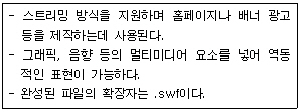
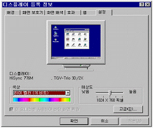
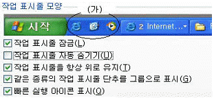
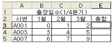
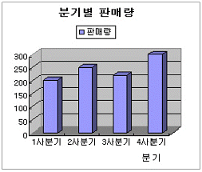
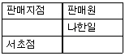
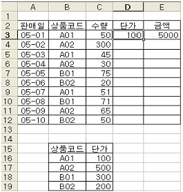
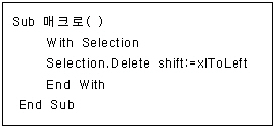
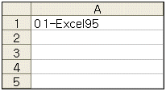
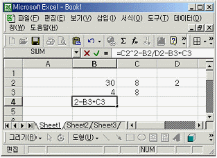

컴퓨터활용능력-2급 (2008-10-12 기출문제)
1과목: 컴퓨터 일반
1. 한글 Windows XP의 [명령 프롬프트] 창에서 작업하다가 윈도우로 복귀하려면 다음 중 어떤 명령을 사용해야 하는가?
- End
- Finish
- Quit
- Exit
(정답률: 64%)

2. 한글 Windows XP에서 ‘Plug & Play’ 기능에 대한 설명으로 가장 옳은 것은?
- 컴퓨터에 연결된 CD-ROM 드라이브에서 오디오CD를 재생할 수 있도록 한다.
- 컴퓨터의 시스템 날짜와 시간을 사용하여 예약된 작업을 실행할 수 있도록 한다.
- Intel이 개발한 규격으로 컴퓨터가 자동으로 장치를 검색하고, 장치 드라이버를 쉽게 설치할 수 있도록 한다.
- 프린터로 보낸 문서를 관리하는 방식으로 작업의 우선순위나 작업완료 시 알릴 사람 등과 같은 작업 설정 사항을 관리한다.
(정답률: 59%)
3. 다음 중 한글 Windows XP 파일과 폴더에 대한 설명으로 가장 옳지 않은 것은?
- ‘*’, ‘/’, ‘\’ 등은 파일과 폴더의 이름으로 사용할 수 있다.
- 하나의 컴퓨터에서 동일한 폴더의 위치에 동일한 이름을 가진 파일을 여러 개 작성할 수 없다.
- 각 파일 또는 폴더에서 마우스 오른쪽 단추를 누르고 [속성]을 선택하여 등록 정보를 확인할 수 있다.
- 파일과 폴더는 이름 바꾸기, 삭제가 가능하며, 하위 폴더나 파일이 포함된 폴더도 삭제할 수 있다.
(정답률: 66%)
4. 다음 중 인터넷 홈페이지 제작 언어로 옳지 않은 것은?
- PERL
- PHP
- ASP
- AIDA
(정답률: 45%)
5. 다음 중 인터넷 메일과 관련성이 가장 적은 프로토콜은?
- MIME
- POP3
- IMAP
- SNMP
(정답률: 45%)
6. 한글 Windows XP에서 시스템을 최적화하기 위한 ‘디스크 정리’ 프로그램에 대한 설명으로 가장 옳지 않은 것은?
- [보조프로그램]의 [시스템 도구] 항목이나 디스크 속성에서 [디스크 정리]를 실행한다.
- 휴지통, 임시 파일, 설치 로그 파일 등을 삭제하거나 오래된 파일을 압축하여 디스크의 공간을 확보할 수 있다.
- Windows구성 요소나 설치된 프로그램을 제거하여 디스크 사용 공간을 늘릴 수 있다.
- 디스크에 분산되어 있는 데이터를 순서대로 최적화시켜 접근 속도를 향상시킨다.
(정답률: 53%)
7. 컴퓨터 범죄 중 무단으로 소프트웨어를 복사하여 저작권 침해를 하였다. 이 경우 민ㆍ형사상 제재를 받게 되는데 어떤 법에 저촉되는가?
- 정보통신 보호법
- 소프트웨어 저작권 보호법
- 개인정보 보호법
- 컴퓨터 프로그램 보호법
(정답률: 27%)
8. 다음 중 웹 애니메이션 제작 프로그램에 대한 설명으로 가장 적합한 것은?

- Auto CAD
- Flash
- CSS
- Frontpage
(정답률: 65%)
9. 다음 그림은 디스플레이 등록 정보 그림이다. 다음 중 가장 옳지 않은 것은?

- 더 많은 색상을 화면에 표시하기 위해서는 ‘색 품질’ 항목의 비트수를 늘려야 한다.
- 해상도를 낮추면 바탕 화면의 아이콘들이 작아진다.
- ‘디스플레이’라고 써 있는 부분에는 컴퓨터에서 현재 설정된 모니터와 비디오 카드의 이름을 보여준다.
- 모니터와 비디오 카드에 대한 세부 설정을 하기 위해서는 [고급] 버튼을 누르면 된다.
(정답률: 74%)
10. 작업 표시줄 모양 그림에서 (가) 부분과 같이 작업 표시줄 속성 창에 자주 사용하는 프로그램을 쉽게 실행할 수 있도록 설정하기 위한 선택항목으로 옳은 것은?

- 작업 표시줄 잠금
- 작업 표시줄을 항상 위로 유지
- 같은 종류의 작업 표시줄 단추를 그룹으로 표시
- 빠른 실행 아이콘 표시
(정답률: 70%)
11. 다음 중 정보통신 관련 용어의 설명으로 가장 옳지 않은 것은?
- 네티켓은 인터넷에 연결된 컴퓨터들 간에 데이터를 주고받을 수 있도록 하는 표준 프로토콜이다.
- 웹 서버는 웹 기반의 업무 어플리케이션 등과 같은 웹 서비스를 제공하는 소프트웨어 혹은 그러한 기능을 수행하는 컴퓨터를 의미한다.
- PCS는 개인 휴대 통신(Personal Communication Services)의 약자로 음성과 데이터 전달, 호출 기능 등을 하나의 기기 안에 포괄하는 전체적인 개념의 이동통신 서비스이다.
- 유비쿼터스란 사용자가 네트워크나 컴퓨터를 의식하지 않고 장소에 상관없이 자유롭게 네트워크에 접속할 수 있는 환경을 의미한다.
(정답률: 64%)
12. 다음 중 손바닥 위에 올려놓고 사용할 수 있을 정도로 아주 작은 크기의 컴퓨터는 어느 것인가?
- 팜톱(Palmtop)컴퓨터
- 랩톱(Laptop)컴퓨터
- 슈퍼(Super)컴퓨터
- 데스크톱(Desktop)컴퓨터
(정답률: 65%)
13. 다음 중 [삭제] 명령 후 휴지통에서 [복원] 명령으로 되살릴 수 없는 파일은 무엇인가?
- 플로피디스크에 저장되어 있는 파일을 휴지통으로 드래그 하여 삭제
- Windows 탐색기에서 [삭제] 명령으로 삭제한 하드디스크의 파일
- [Delete]로 삭제한 하드디스크 파일
- 마우스를 이용하여 휴지통으로 드래그 하여 삭제한 하드디스크 파일
(정답률: 45%)
14. [제어판]의 [프로그램 추가/제거] 기능에 대한 설명으로 가장 옳지 않은 것은?
- 새로운 응용 프로그램을 추가로 설치하고 제거한다.
- Windows XP 구성 요소를 추가 또는 제거한다.
- 컴퓨터에 추가하는 하드웨어를 지원하는 드라이버 소프트웨어를 설치한다.
- 웹 브라우징이나 전자 메일 전송과 같은 작업에 사용할 기본 프로그램을 선택하고, 시작 메뉴와 바탕 화면, 기타 위치에서 액세스할 프로그램을 지정한다.
(정답률: 34%)
15. 다음 중 스풀링(Spooling)에 대한 설명으로 옳지 않은 것은?
- 스풀링은 CPU 작업시간과 프린터의 인쇄 작업시간 사이의 차이를 완충하는 기능을 한다.
- 사용자는 프린터 옵션 설정을 통하여 스풀링기능 사용을 취소할 수도 있다.
- 모든 인쇄 작업은 문서 전체에 대한 스풀링 작업이 완료되었을 경우에만 인쇄 작업을 시작할 수 있다.
- 스풀링 중인 인쇄 작업도 취소를 할 수 있다.
(정답률: 56%)
16. 다음 중 인터넷 서비스에 대한 설명으로 옳지 않은 것은?
- 전자 우편(E-Mail) : 컴퓨터 통신망을 이용하여 사용자간에 편지나 여러 정보를 주고받을 수 있는 서비스
- IRC : 게시판과 같은 역할을 하며 공통된 주제에 대하여 정보나 의견을 나눌 수 있는 서비스
- Telnet : 컴퓨터 통신망 상의 다른 컴퓨터에 로그인하기 위해 사용하는 프로토콜 혹은 서비스
- FTP : 파일 전송 프로토콜(File Transfer Protocol)의 약자로 인터넷에서 파일을 송수신할 때 사용되는 서비스
(정답률: 55%)
17. 다음 중 인터넷 상에서 상호작용이 가능한 3차원 가상 세계를 표현할 수 있게 해주는 언어는?
- HTML
- VRML
- XML
- Dynamic HTML
(정답률: 62%)
18. 컴퓨터에서 롬 바이오스(ROM BIOS)를 새 버전으로 업그레이드할 때 롬 칩(ROM CHIP)을 교환하지 않고 사용자가 바이오스 업데이트용 소프트웨어를 이용하여 편리하게 업그레이드하기 위한 롬은?
- mask ROM
- PROM
- APROM
- EEPROM
(정답률: 54%)
19. 다음 중 한글 Windows XP에서 네트워크 공유에 대한 설명으로 가장 옳지 않은 것은?
- 다른 사람들이 자신의 자료에 접근하여 사용할 수 있도록 설정해 놓은 것이다.
- 문서, 비디오, 소리, 그림 등의 데이터는 공유할 수 있지만 프로그램은 실행할 수 없다
- 내 컴퓨터에 연결되어 있는 프린터를 다른 컴퓨터에서 사용할 수 있도록 프린터 공유가 가능하다.
- 공유된 폴더에 폴더를 적용하여 파일을 삭제하거나 변경하지 못하게 설정할 수 있다.
(정답률: 60%)
20. 다음 중 한글 Windows XP에서 인터넷을 사용할 수 있게 하며 클라이언트가 동적인 IP주소를 할당받을 수 있게 해주는 것은?
- WWW
- HTML
- DHCP
- WINS
(정답률: 46%)
2과목: 스프레드시트 일반
21. 다음 중 부분합 기능에서 사용할 수 있는 함수 목록으로 옳지 않은 것은?
- 표준 편차
- 곱
- 숫자 개수
- 순위
(정답률: 45%)
22. 다음 중 [새 매크로 기록]에 대한 설명으로 옳지 않은 것은?
- 매크로 이름을 “매크로 연습”으로 입력하였다.
- 바로 가기 키 값을 “m”으로 입력하였다.
- 매크로 저장 위치를 “새 통합 문서”로 저장하였다.
- 매크로 설명에 매크로 기록자의 이름, 기록한 날짜, 간단한 설명 등을 기록하였다.
(정답률: 48%)
23. 셀 [A1]에 주민등록번호인 85⑤12-154813이 입력되어 있다. 이 셀 값을 이용하여 셀 [B1]에 성별을 “남” 또는 “여”로 표시하는 함수식이 옳게 된 것은? (단, 주민등록번호의 8번째 글자가 1이면 남자이다.)
- =CHOOSE(LEFT(A1,8),“남”,“여”)
- =VLOOKUP(A1,A2,1)
- =INDEX(“남”,“여”)
- =IF(MID(A1,8,1)=“1”,“남”,“여”)
(정답률: 54%)
24. 다음 중 엑셀의 기능에 대한 설명으로 가장 옳지 않은 것은?
- [데이터]-[표] : 특정 값이나 수식을 입력한 후 이를 이용하여 표를 자동으로 만들어 주는 기능이다.
- [도구]-[시나리오] : 워크시트에 입력된 많은 양의 자료를 효율적으로 분석하고 요약하는 기능으로 차트를 함께 작성할 수 있다.
- [도구]-[목표값 찾기] : 수식의 원하는 결과 값은 알고 있지만, 그 결과를 계산하기 위해 필요한 입력 값을 모르는 경우에 사용하는 도구로 하나의 입력 값만 변경할 수 있다.
- [데이터]-[통합] : 여러 범위의 데이터 값을 결합하여 새로운 형태의 보고서를 만들 수 있다.
(정답률: 44%)
25. 그림에서 [E3] 셀에 =SUM($B$3:D3)를 입력한 후 채우기 핸들을 아래로 끌었을 때 [E5] 셀에 표시되는 결과 값은?

- 3
- 15
- 22
- 37
(정답률: 30%)
26. 데이터와 차트가 함께 있는 워크시트 인쇄에 관한 설명으로 옳지 않은 것은?
- 차트를 제외하고 워크시트만 별도로 인쇄할 수 있다.
- 차트와 워크시트안의 데이터를 함께 인쇄할 수 있다.
- 차트만 인쇄하기 위해서는 먼저 차트 영역을 선택해야 한다.
- 워크시트만 인쇄하기 위해서는 먼저 차트 영역을 감추기 한 후 인쇄를 해야한다.
(정답률: 48%)
27. 다음 중 메모를 인쇄하는 방법으로 맞지 않은 것은?
- 워크시트에 나타난 위치에 메모를 인쇄하려면 우선 메모 있는 셀을 ‘메모 표시’로 설정해야 한다.
- 시트 끝에 메모를 인쇄하려면 페이지 설정의 시트 탭에 있는 메모 상자에서 ‘시트 끝’을 선택한다.
- 워크시트에 나타난 위치에 메모를 인쇄하려면 페이지 설정의 시트 탭에 있는 메모 상자에서 ‘시트에 표시된 대로’를 선택한다.
- 워크시트를 제외하고 메모만을 모아서 인쇄하려면 페이지 설정의 시트탭에 있는 메모 상자에서 ‘없음’을 선택한다.
(정답률: 66%)
28. [A1] 셀에 ‘###.##’와 같이 사용자 서식 코드를 지정한 뒤 12345.678이라고 입력했을 때 셀에 표시되는 값은?
- 12345.68
- 12345.578
- 123.46
- 123.45
(정답률: 52%)
29. 다음 그림의 차트에서 설정되지 않은 옵션은?

- 범례
- 차트제목
- 축 제목
- 데이터 레이블
(정답률: 64%)
30. 다음 고급필터 검색 기준의 의미로 올바른 것은?

- 판매지점이 서초점이거나 판매원이 나한일인 레코드
- 판매지점이 서초점이고, 판매사원이 나한일이 아닌 레코드
- 판매지점이 서초점인 레코드 중 판매원이 나한일인 레코드
- 판매원이 나한일인 레코드 중 판매지점이 서초점인 레코드
(정답률: 69%)
31. 다음 그림의 [D3] 셀의 값을 VLOOKUP 함수를 이용하여 나타내었다. 채우기 핸들로 모든 단가를 계산할 생각이다. 이때 [D3] 셀에 사용된 함수식으로 옳은 것은?

- =VLOOKUP($B$16:$C$19,2,B3)
- =VLOOKUP($B$16:$C$19,B3,2)
- =VLOOKUP($B$3,B16:C19,3)
- =VLOOKUP(B3,$B$16:$C$19,2)
(정답률: 36%)
32. 다음 중 그리기 도구 모음에 관련된 설명으로 옳은 것은?
- [Alt]를 누른 채 도형을 그리면 가로/세로 비율이 동일한 도형이 그려진다.
- 직선을 그릴 때 [Ctrl]을 누른 채 선을 그리면 각도가 정확한 수평선/수직선이 그려진다.
- [Shift]를 누른 채 사각형의 크기를 조절하면 정사각형이 된다.
- [Shift]를 누른 채 도형을 드래그하고 마우스 단추에서 손을 떼면 해당 도형이 복사된다.
(정답률: 38%)
33. 다음 중 차트에 대한 설명으로 옳지 않은 것은?
- 3차원 차트란 3차원 세로 막대, 3차원 꺽은 선과 같이 축이 3개로 구성된 차트를 일컫는다.
- 원형 차트는 추세선 추가가 불가능하다.
- 3차원 차트는 추세선 추가가 가능하다.
- 3차원 차트는 [차트]-[3차원 보기] 메뉴를 통해 상하회전 및 좌우 회전 값을 변경할 수 있다.
(정답률: 46%)
34. 다음 매크로를 실행시키면 나타나는 현상은?

- 선택된 영역이 지워진다.
- Sheet1이 모두 왼쪽으로 정렬된다.
- 선택된 영역이 기본 형태로 바뀐다.
- 아무 일도 일어나지 않는다.
(정답률: 42%)
35. 다음 워크시트에서 [A1] 셀에 대하여 채우기 핸들을 이용하여 [A2], [A3], [A4]까지 드래그 했을 때 [A4] 셀에 나타나는 데이터는?

- 01-Excel95
- 04-Excel95
- 04-Excel98
- 01-Excel98
(정답률: 41%)
36. 특정한 시점의 항목 간의 크기를 비교하는 경우에 가장 적절한 차트는?
- 가로 막대형 차트
- 꺾은선형 차트
- 분산형 차트
- 영역형 차트
(정답률: 35%)
37. 아래의 시트에서 [B2] 셀에 30, [B3] 셀에 4, [C2] 셀에 8, [C3] 셀에 8, [D2] 셀에 2를 입력하고 [B4] 셀에 수식 “=C2^2-B2/D2-B3*C3”을 입력했을 때 나타나는 값으로 옳은 것은?

- 104
- -15
- -31
- 17
(정답률: 36%)
38. 다음 중 정렬에 관한 설명으로 옳지 않은 것은?
- 기본적으로 행 단위로 정렬한다.
- 대/소문자를 구분하여 정렬하는 기능은 없다.
- 오름차순으로 정렬하면 숫자가 한글보다 앞에 위치한다.
- 사용자가 [도구]-[옵션]-[사용자 지정 목록]에서 정렬 순서를 추가하거나 삭제할 수 있다.
(정답률: 55%)
39. 셀에 분수 1/2을 입력하면 날짜 01월 02일로 인식되어 출력된다. 만약 특정 셀 서식을 지정하지 않은 상태에서 셀에 분수 1/2을 출력하기 위한 입력 형식은?
- 0.5
- 0 1/2
- # 1/2
- $ 1/2
(정답률: 53%)
40. 다음 중 ‘창 정렬’에서 설정할 수 있는 정렬 방식이 아닌 것은?
- 바둑판식
- 계단식
- 채우기식
- 세로
(정답률: 44%)